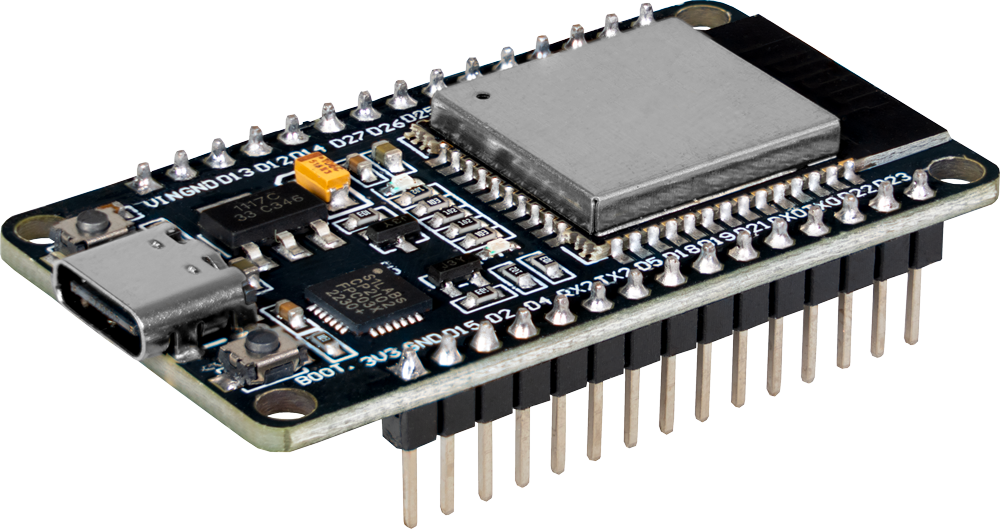

Benjamin & Kfir
Can simple buzzers recreate real music? We wanted to move beyond noise and build something musical.
We switched from Arduino to ESP32 for:
• Faster processing
• Better timing precision
• More control over sound

Each note is a frequency. The ESP32 sends signals to buzzers to recreate those frequencies.
• Notes mapped to frequencies • Precise timing • Sequenced playback
Real test of the system:
The system recreates the melody in real time.
• More complex songs • Better sound quality • Lights synced with music